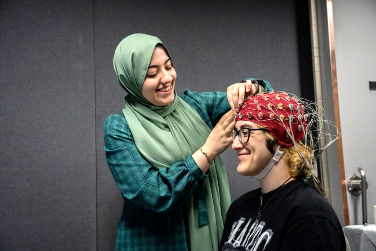

[X]
This demo was developed by Dr. Tijl Grootswagers using jspsych7.2
Sign up to participate in our research!
If you'd like to participate in our research, scan the QR Code to register to our database or chat to our friendly researchers for more information. https://www.westernsydney.edu.au/marcs/engage_with_us/participate_in_a_study/paid_sona